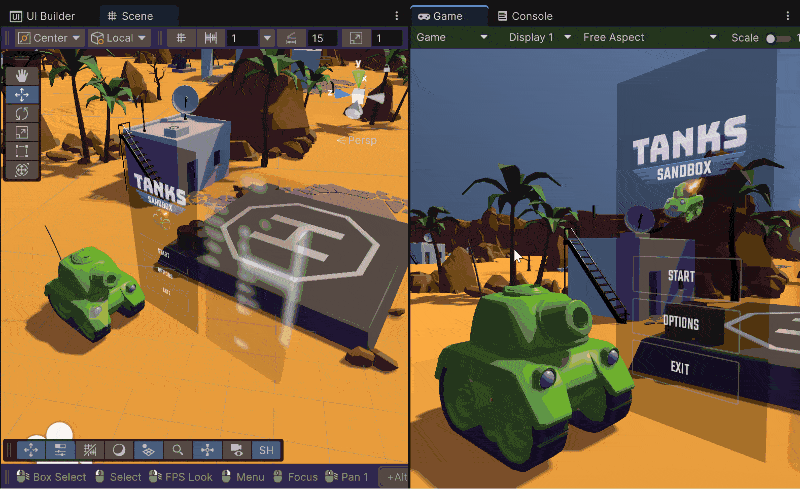
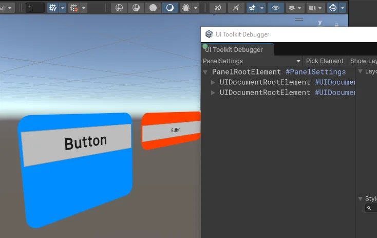
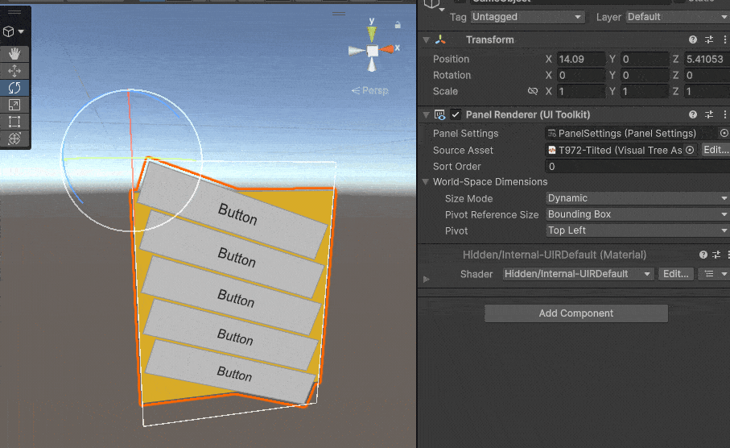

To create a World Space UI, set the render mode of the Panel Settings asset to World Space.
In a World Space UI, you can position, rotate, and scale UI elements just like any other 2D or 3D object. This is useful for displaying interactive UI elements, such as health bars or labels, directly in the game world, tied to objects or characters.

You need to decide what’s the resolution of the World Space UI. You set this in the Pixels Per Unit parameters of the Panel Settings asset. This is the number of panel-space pixels that fit into one unit in the World Space. The default value is 100, which means that one unit in the World Space is 100 pixels in the panel. This is a good starting point, but you can adjust it to fit your needs.
To specify the size of the World Space UI container, use USS properties size and position. The container contains the Panel Renderer and is the parent of all the elements in the UI hierarchy. The size property sets the width and height of the container in World Space. This allows you to control how large the container appears relative to other objects in the scene. The position property determines the container’s location in the World Space and lets you place it accurately within the 3D environment.
If you create your UI in absolute position with an explicit size in USS, in your Panel Renderer’s Inspector window, select World-Space Dimensions > Size Mode > Dynamic. This ensures that the World Space UI adjusts itself to the content size. Otherwise, use the Fixed option and set the size manually.
If you connect multiple Panel Renderers to the same Panel Settings asset, you can configure each container’s size and position independently. In the following example, two Panel Renderers share the same Panel Settings asset, but each container has its own size and position settings, allowing flexible customization within the same World Space UI setup.

Tips:
Unlike a Screen Space Overlay, you can freely position and rotate a World Space UI within the Scene view. You can place it on walls, floors, or ceilings. You can also position it on slanted surfaces or have it float in mid-air. Use the standard Translate and Rotate tools in the Scene view’s toolbar to adjust the position and orientation of the GameObject that’s referencing your UI.
The pivot reference size is the size of the container that the Panel Renderer uses to calculate for pivot positioning in World Space.
To set the pivot reference size, in the Inspector window of the Panel Renderer, select the following pivot reference size from the World-Space Dimensions > Pivot Reference Size dropdown list:

The pivot point is the reference point the Panel Renderer uses for position and transformations, such as rotation and scaling. The default pivot point is at the center of the Panel Renderer. You can set it to any of the following points in the World-Space Dimensions > Pivot dropdown list in the Inspector window of the Panel Renderer:
To configure the Panel Input Configuration settings, do one of the following:
This adds a Panel Input Configuration component. You can then configure the Panel Input Configuration properties in its Inspector window.
In World Space rendering, the z-distance from the camera determines the sorting order of root Panel Renderers. UI elements closer to the camera appear in front of those farther away. Nested Panel Renderers are rendered together with their parent, and you can use the sorting order property to control their order relative to sibling Panel Renderers under the same parent.
Note: Integration with 2D sorting layers isn’t currently supported. You can set a logical layer on the GameObject and use it for camera culling. It gets added to the default sorting layer.